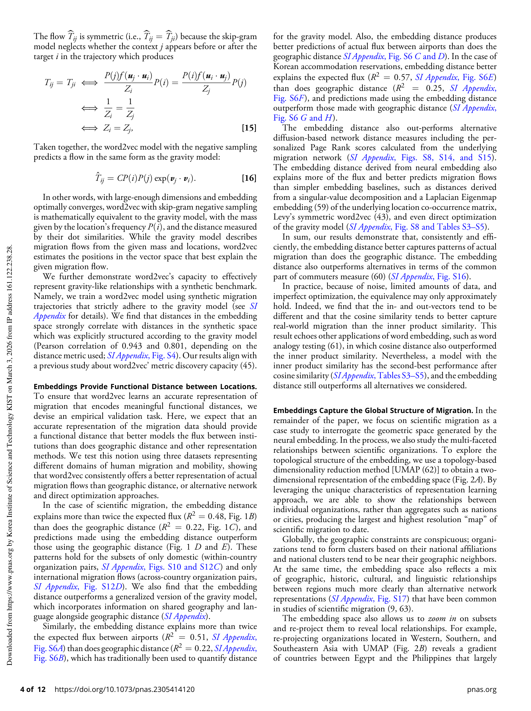
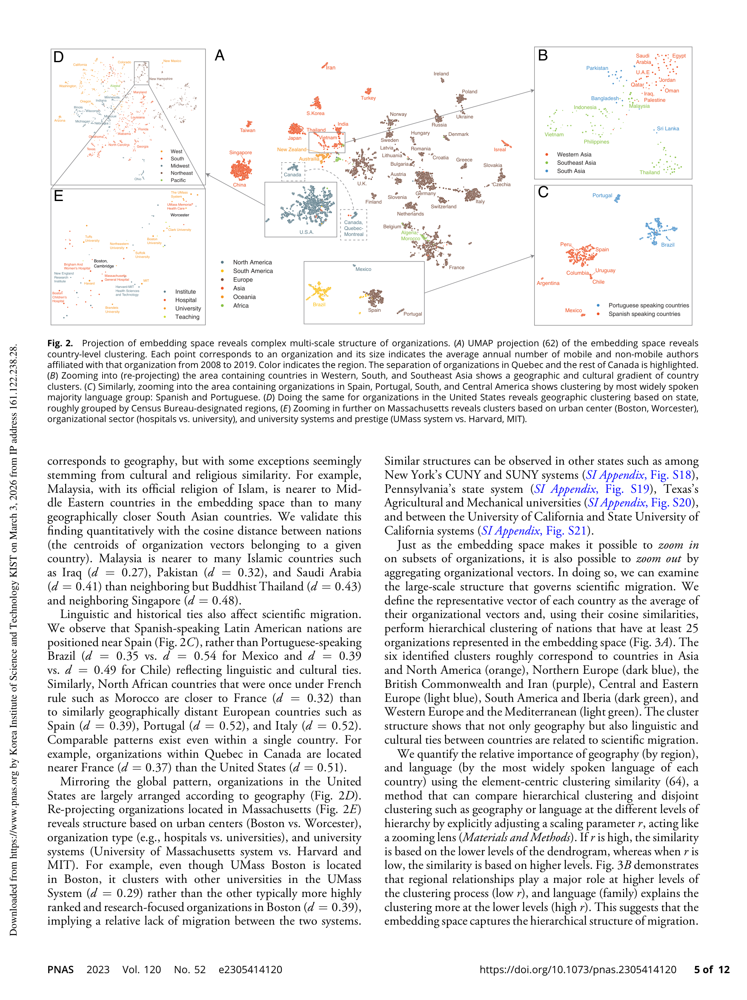
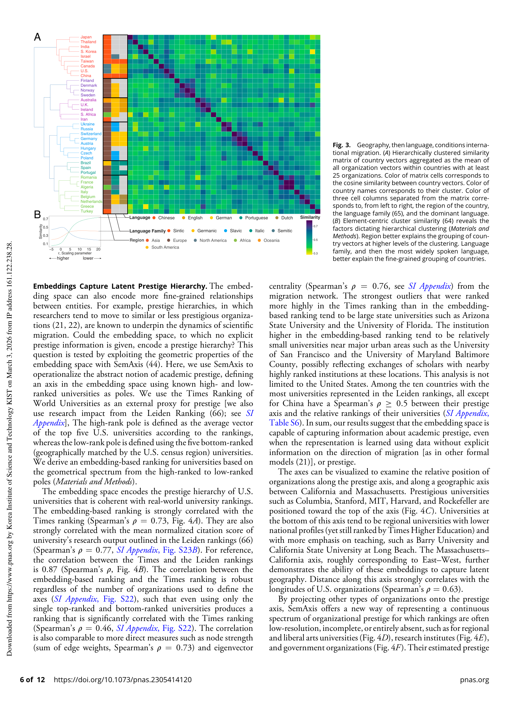
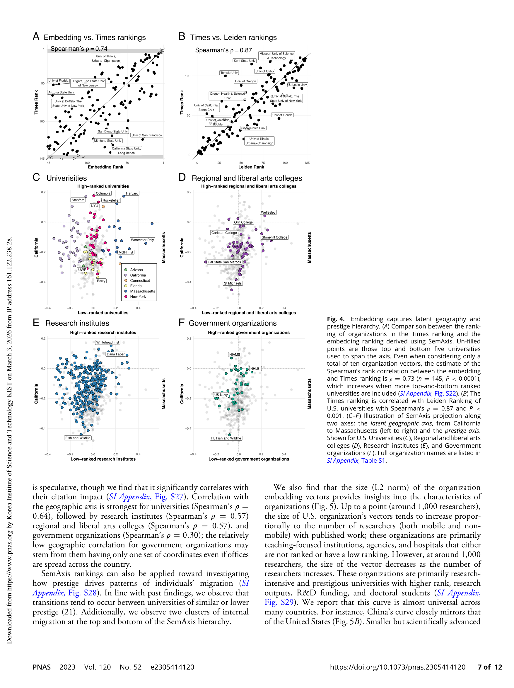

Figure 1
저자: Dakota Murray, Jisung Yoon, Sadamori Kojaku, Rodrigo Costas, Woo-Sung Jung, Stasa Milojevic, Yong-Yeol Ahn | 날짜: 2023-12-26 | Journal: Proceedings of the National Academy of Sciences | DOI: 10.1073/pnas.2305414120
Figure 1
Word2vec(Skip-Gram Negative Sampling)가 이동의 gravity model과 수학적으로 동치임을 증명하고, 300만 명 과학자의 소속 이동 궤적에 적용하여 지리, 언어, 문화, 학술적 위신(prestige) 등 과학 이주의 다층적 구조를 단일 벡터 공간에 인코딩할 수 있음을 보여주었다. Embedding distance는 지리적 거리 대비 기관 간 이동 flux 설명력이 2배 이상(R2 = 0.48 vs. 0.22)이며, SemAxis로 추출한 prestige 축은 Times 대학 랭킹과 Spearman rho = 0.73의 강한 상관을 보인다.

Figure 2

Figure 3

Figure 4

Figure 5
총평: Word2vec와 gravity model의 수학적 동치성 증명이라는 이론적 기여와, 다중 스케일에서 과학 이주의 지리-언어-문화-위신 구조를 체계적으로 밝혀낸 실증 분석이 결합된 탁월한 연구로, neural embedding을 이주 연구에 적용하는 이론적 기반과 방법론적 프레임워크를 확립한 기념비적 논문이다.